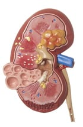

End-Stage Renal Disease (ESRD)

CAUSES
Causes of ESRD include:
- long-term blockage of the urinary tract by kidney stones, enlarged prostate, or certain types of cancer
- glomerulonephritis, an inflammation of the filters in your kidney (known as glomeruli)
- vesicoureteral reflux, when urine flows into your kidneys
- congenital abnormalities
SYMPTOMS
Symptoms of ESRD include:
- a decrease in how much you urinate
- inability to urinate
- fatigue
- malaise, or a general ill feeling
- headaches
- unexplained weight loss
- loss of appetite
- nausea and vomiting
- dry skin and itching
- changes in skin color
- bone pain
- confusion and difficulty concentrating
DIAGNOSIS
Your doctor diagnoses ESRD using a physical examination and tests to check your kidney function. Kidney function tests include:
- Urinalysis: This test helps your doctor check for protein and blood in your urine. These substances indicate that your kidneys aren’t processing waste properly.
- Serum creatinine test: This test helps your doctor check whether creatinine is building up in your blood. Creatinine is a waste product that your kidneys should filter out of your body.
- Blood urea nitrogen test: This test helps your doctor check how much nitrogen is in your blood.
- Estimated glomerular filtration rate (GFR): This test allows your doctor to estimate how well your kidneys filter waste
TREATMENTS
The treatments for ESRD are dialysis or a kidney transplant. In some cases, lifestyle changes and medications may help.
- Dialysis
- Kidney transplant
- Drugs
- Lifestyle changes